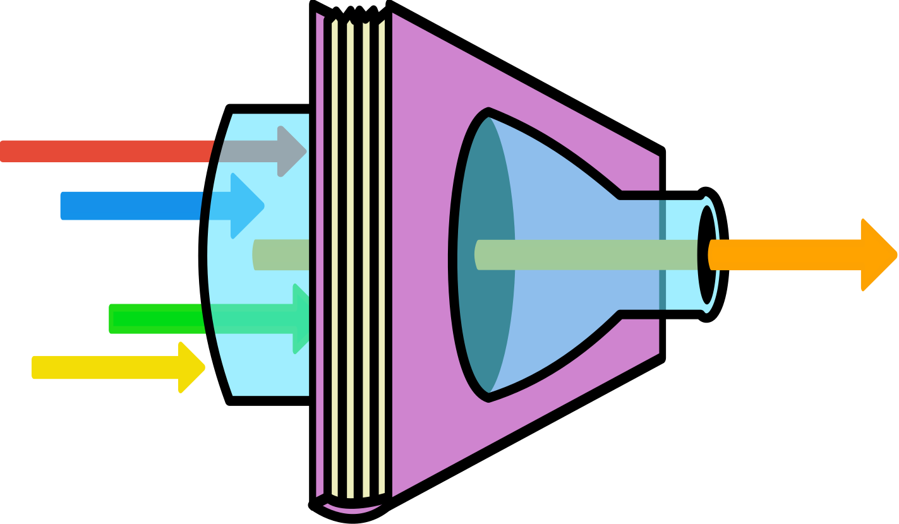
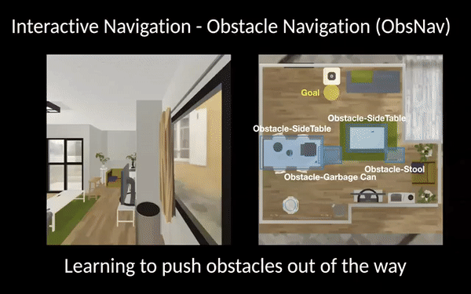
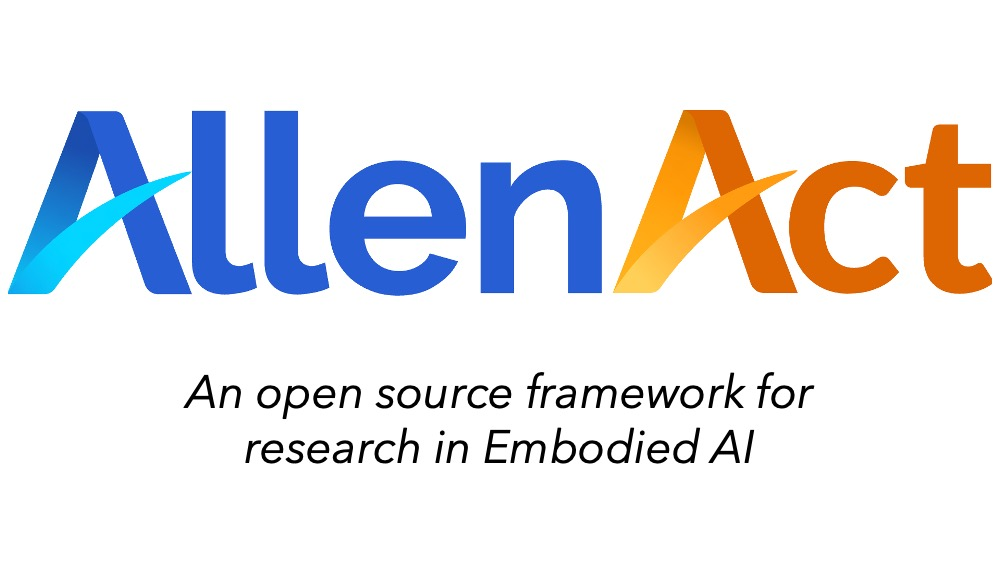
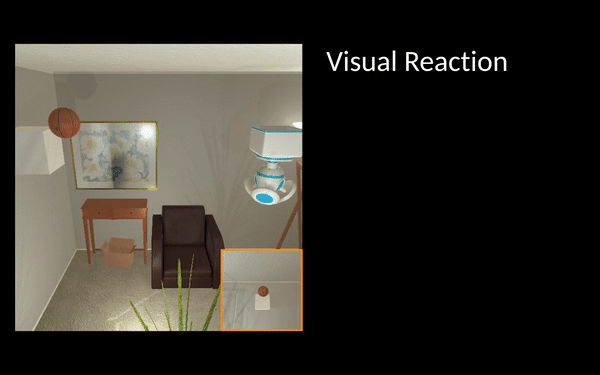
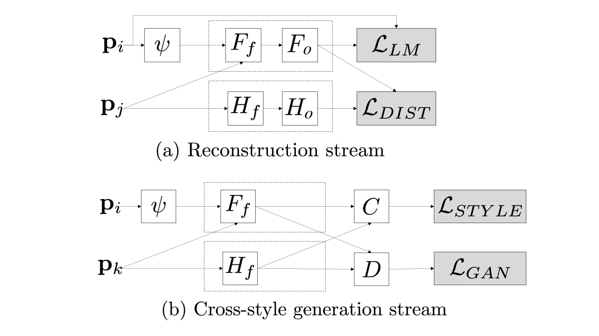
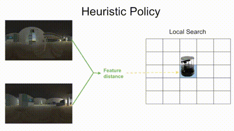
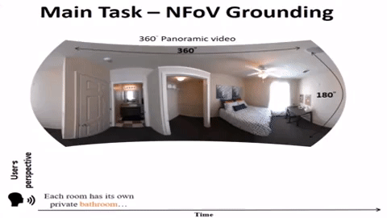
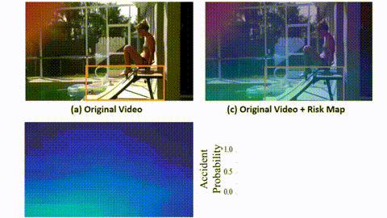
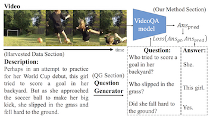
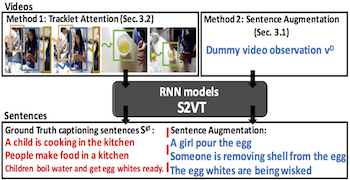

Kuo-Hao Zeng 曾國豪
Research Scientist, Allen Institute for AI
khzeng at allenai.org
I am a research scientist at the Allen Institute for AI. I received my Ph.D. in the Computer Science & Engineering from the University of Washington, advised by Ali Farhadi and Roozbeh Mottaghi in RAIVN Lab.
My current research interests are in Learning through Interaction and utilizing Visual Reasoning to Learn Interactive Embodied Agents.
Previously, I reveiced my MS. from National Tsing Hua University, where I worked with Min Sun. During my MS. study, I had the pleasure of being a visiting student working with Juan Carlos Niebles at Stanford Vision and Learning Lab.
My CV [PDF], last updated Jan 2024.
Publications

Selective Visual Representations Improve Convergence and Generalization for Embodied AI
Ainaz Eftekhar*, Kuo-Hao Zeng*, Jiafei Duan, Ali Farhadi, Ani Kembhavi, Ranjay Krishna
ICLR 2024 Spotlight

Moving Forward by Moving Backward: Embedding Action Impact over Action Semantics
Kuo-Hao Zeng, Luca Weihs, Roozbeh Mottaghi, Ali Farhadi
ICLR 2023 Oral Presentation

Pushing it out of the Way: Interactive Visual Navigation
Kuo-Hao Zeng, Luca Weihs, Ali Farhadi, Roozbeh Mottaghi
CVPR 2021

AllenAct: A Framework for Embodied AI Research
Luca Weihs, Jordi Salvador, Klemen Kotar, Unnat Jain, Kuo-Hao Zeng, Roozbeh Mottaghi, Aniruddha Kembhavi
Preprint

Visual Reaction: Learning to Play Catch with Your Drone
Kuo-Hao Zeng, Roozbeh Mottaghi, Luca Weihs, Ali Farhadi
CVPR 2020

Style Example-Guided Text Generation using Generative Adversarial Transformers
Kuo-Hao Zeng, Mohammad Shoeybi, Ming-Yu Liu
Arxiv 2020

Omnidirectional CNN for Visual Place Recognition and Navigation
Hung-Jui Huang, Tsun-Hsuan Wang, Juan-Ting Lin, Chan-Wei Hu, Kuo-Hao Zeng, Min Sun
ICRA 2018

Self-view Grounding Given a Narrated 360° Video
Shih-Han Chou, Yi-Chun Chen, Kuo-Hao Zeng, Hou-Ning Hu, Jianlong Fu, Min Sun
AAAI 2018
ICCV 2017 Workshop

Agent-Centric Risk Assessment: Accident Anticipation and Risky Region Localization
Kuo-Hao Zeng, Shih-Han Chou, Fu-Hsiang Chan, Juan Carlos Niebles, Min Sun
CVPR 2017 Spotlight

Leveraging Video Descriptions to Learn Video Question Answering
Kuo-Hao Zeng, Tseng-Hung Chen, Ching-Yao Chuang, Yuan-Hong Liao, Juan Carlos Niebles, Min Sun
AAAI 2017
Title Generation for User Generated Videos
Kuo-Hao Zeng, Tseng-Hung Chen, Juan Carlos Niebles, Min Sun
ECCV 2016
